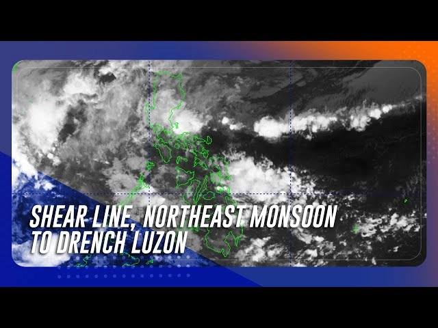

Possible cooling La Nina will be 'weak', 'short-lived': UN
Published Dec 11, 2024 05:22 PM PHT
The cooling weather phenomenon La Nina could appear in coming months, but if it does it will likely be too "weak and short-lived" to significantly impact soaring global temperatures, the UN said Wednesday.
There is currently a 55-percent likelihood of La Nina conditions emerging by the end of February, the United Nations' World Meteorological Organization said in its latest update.
There was a similar chance of the phenomenon developing between February and April, it added.
The WMO had earlier this year voiced hope the return of La Nina would help lower temperatures slightly after months of global heat records fueled in part by La Nina's opposite number, the warming El Nino weather pattern, which gripped the planet for a year from June 2023.
But WMO chief Celeste Saulo warned in Wednesday's statement that a possible La Nina would have little impact following a 2024, which is on track to be the hottest year on record.
"Even if a La Nina event does emerge, its short-term cooling impact will be insufficient to counterbalance the warming effect of record heat-trapping greenhouse gases in the atmosphere," she said.
"Even in the absence of El Nino or La Nina conditions since May, we have witnessed an extraordinary series of extreme weather events, including record-breaking rainfall and flooding which have unfortunately become the new norm in our changing climate."
La Nina refers to a naturally occurring climate phenomenon that cools the ocean surface temperatures in large swathes of the tropical Pacific Ocean, coupled with winds, rains and changes in atmospheric pressure.
In many locations, especially in the tropics, La Nina produces the opposite climate impacts to El Nino, which heats up the surface of the oceans, leading to drought in some parts of the world and triggering heavy downpours elsewhere.
While both are natural climate events, WMO stressed they were "taking place in the broader context of human-induced climate change, which is increasing global temperatures, exacerbating extreme weather and climate, and impacting seasonal rainfall and temperature patterns".
Potential cyclone looms before Christmas: PAGASA
Published Dec 11, 2024 04:08 PM PHT
MANILA — A weather disturbance may form outside the country and enter the Philippine area of responsibility about a week before Christmas, the state weather bureau said Wednesday.
PAGASA said the weather system had a low to moderate chance of developing into a tropical cyclone and could graze the eastern sections of Mindanao, Visayas, and Southern Luzon.
The next storm's name is Querubin.
Between October and November, six storms struck the Philippines, left around 171 people dead and thousands homeless, as well as wiped out crops and livestock.
NASA: Philippines' overlapping cyclones 'unusual'
Storms help draw paths, create better conditions for next one
About 20 big storms and typhoons hit the Philippines or its surrounding waters each year, killing scores of people, but it is rare for multiple such weather events to take place in a small window.
Shear Line, northeast monsoon to drench Luzon
Published Dec 11, 2024 07:50 AM PHT

Expect rainy weather across parts of Luzon Wednesday as the shear line affects the eastern sections of Central and Southern Luzon while the northeast monsoon affects Northern Luzon and the rest of Central Luzon, weather bureau PAGASA said.
Metro Manila, CALABARZON, Nueva Ecija, Bulacan, Aurora, Camarines Norte, Camarines Sur, and Catanduanes will experience cloudy skies with scattered rains and isolated thunderstorms due to the shear line.
Similarly, Eastern Samar, Dinagat Islands, Surigao del Norte, and Surigao del Sur will experience cloudy skies with scattered rains and thunderstorms due to the easterlies.
Cagayan Valley, Apayao, Kalinga, Mountan Province, and Ifugao will experience cloudy skies with rains due to the northeast monsoon while Ilocos Region, and the rest of Cordillera Administrative Region and Central Luzon will experience partly cloudy to cloudy skies with isolated light rains due to the monsoon.
The rest of the country will experience partly cloudy to cloudy skies with isolated rainshowers or thunderstorms due to the easterlies.
FACT CHECK: Hindi totoong may dalawang bagyong tatama sa Visayas at Mindanao
Published Dec 10, 2024 02:33 PM PHT
|
Updated Dec 11, 2024 07:15 PM PHT
Kasalukuyang walang namamataang bagyo ang Philippine Atmospheric, Geophysical and Astronomical Services Administration (PAGASA) na posibleng tumama sa Visayas at Mindanao, taliwas sa sinasabi sa isang Facebook post.
Mababasa sa nasabing post na ini-upload noong Disyembre 9, 2024 ang caption na “ALERTO: Dalawang malalakas na bagyo, na tatawaging #QuerubinPH at #Romina, ay posibleng mag-landfall sa Visayas at Mindanao.”
Kalakip nito ang satellite image ng umano’y bagyong Querubin at Romina. Kinuha ang satellite image mula sa orihinal na larawan ng PAGASA na nagpapakita sa Tropical Depression Butchoy at Tropical Depression Carina sa magkabilang gilid ng Pilipinas noong Hulyo 19, 2024. Minanipula ang orihinal na larawan at pinalitan ang mga label na “Butchoy” at “Carina” ng “Querubin” at “Romina.”
Sa inilabas na listahan ng PAGASA, ang mga pangalang Querubin at Romina na ginamit sa post ay ang mga nakatakdang pangalan ng mga susunod na bagyong tatama ngayong 2024. Pero hindi pa nabubuo ang mga ito.
PAGASA debuts 4 new names in 2024 storm list
Ayon sa tropical cyclone bulletin at advisory ng PAGASA ngayong Disyembre 10, walang aktibong bagyo ang makikita sa loob at labas ng Philippine Area of Responsibility (PAR).
Wala ring bagyo ang inaasahang mabubuo malapit sa bansa hanggang Disyembre 15 ayon sa Tropical Cyclone-Threat Potential Forecast na inilabas ng ahensya noong Disyembre 9 . Mababa hanggang sa katamtaman naman ang tsansa ng pamumuo ng bagyo mula Disyembre 16 hanggang 22.
Sa 4 AM weather forecast ng PAGASA ngayong araw, inaasahan ang maulap na kalangitang may kalat-kalat na pag-ulan at pagkulog sa ilang bahagi ng Visayas at Mindanao. Ito ay dahil sa localized thunderstorms at intertropical convergence zone o ang salubungan ng hangin mula northern at southern hemispheres.
FAKE WEATHER ALERTS
Nakakalap na ng 1,300 shares ang naturang post tungkol sa mga pekeng bagyo.
Ayon kay University of the Philippines Professor Danilo Arao, maaaring “unconsciously done” o hindi sinasadya ang pagbabahagi ng maling impormasyon tungkol sa kalamidad.
"People would be overeager to provide certain data when in fact what they’re sharing would still be unconfirmed, so in the process you do not help in terms of truth-telling,” ani Arao.
Nagpaalala si LJ Estrebillo, information officer sa PAGASA, na kumuha lamang ng impormasyon tungkol sa lagay ng panahon sa opisyal na sources gaya ng PAGASA at mga legitimate media outlet.
"Our official information for the weather and climate in the Philippines should come from official sources such as the DOST (Department of Science and Technology) PAGASA,” sabi ni Estrebillo. “Antabayanan ang mga update sa official sources lamang.”
Na-fact check na rin ng ABS-CBN ang ilang pekeng impormasyon na may kinalaman sa bagyo at kalamidad.
FACT CHECK: Wala pang bagyong kasunod ang Super Typhoon Pepito
CHECK: AI-generated ang video umano ng pananalasa ni bagyong Nika
FACT CHECK: Hindi sa Cagayan ang kumakalat na larawan ng pananalasa ni Bagyong Marce
Kung kayo’y may alam na kahina-hinalang social media page, group, account, o website, artikulo, larawan, o impormasyong ipinapakalat sa mga messaging app, maaring makipag-ugnayan sa aming email factcheck@abs-cbn.com o X (dating Twitter) account @abscbnfactcheck.
Communities struggle to stay afloat as delays impede flood management in Metro Manila
Published Dec 05, 2024 08:03 PM PHT
|
Updated Dec 08, 2024 10:21 PM PHT

MANILA — Seven years after the Metro Manila Flood Management Project commenced, project implementers Department of Public Works and Highways and Metropolitan Manila Development Authority have disbursed less than 3 out of every 10 dollars borrowed for the project.
The low disbursement rate is due to significant delays since the project implementation began.
Of the remaining 34 pumping stations to be rehabilitated and modernized, only 4 out of every 10 have been completed so
Two of the original 36 pumping stations have also been delisted: One was completed before the project started and the other was decommissioned in 2016.
As of 2024, none of the listed four new pumping stations have been constructed. Revised project documents show that these new pumping stations are now projected to operational by 2026 and are much fewer than the original target of 20 new stations in Metro Manila.
The World Bank noted that delays were due to “design shortcomings, including a lack of specificity in site selection for drainage areas and uncertainties regarding the number and locations of new pumping stations planned for construction.”
The project, approved in September 2017, was initially scheduled for completion in November 2024 but has experienced delays due to various factors.
In 2022, the World Bank gave the project an Overall Implementation Progress rating of “Moderately Unsatisfactory (MU).”
This rating prompted the lenders to call for a Mid-Term Review, according to the World Bank Restructuring Document published in September 2024.
reviews and discussions, the lender agreed to extend the project implementation by two more years, until November 2026.
The World Bank also noted a significant increase in disbursement and commitment, eventually upgrading the performance rating to Moderately Satisfactory in 2023.
The World Bank also highlighted challenges encountered by representatives from the Department of Public Works and Highways (DPWH), who took on the responsibility of preparing the final designs and bidding documents. Capacity constraints within the agency slowed down the document preparation process.
This was confirmed by Engineer Lydia Aguilar of the Unified Project Management Office — Flood Control and Management Cluster, who noted that an initial lack of familiarity with the World Bank’s Design, Supply, and Installation procedures further delayed the preparation of required documents and the procurement of civil work packages that meet World Bank standards.
Aside from the challenges with the processes, Aguilar also explained that when the project started in 2017, almost a year went into preparation of documents. The lengthy process was compounded by the COVID-19 pandemic, which made it more difficult to do site visits, hold meetings, slowing down the bidding and selection process for project contractors.
“Tapos, okay na nga sana kami, makaka-bounce back kami. Pero, hindi mo kami bibigyan ng budget. Kaya nga, dapat inaalam ng taong bayan yung challenges. Sana huwag muna kayong mag-ano (judge), alamin muna nila ang buong kwento,“ she said.
(We were about to bounce back from the pandemic, but we weren't given funding. People should really learn about the challenges. Don't be too quick to judge, find out the whole story first)
Delay in project implementation exacerbates problem in communities susceptible to flooding
Made with Flourish
For Barangay 180, Pasay City head Patrick San Miguel the timely completion of the flood management project could have prevented a repeat of Ondoy-like flooding in the community, the most destructive in the past two decades.
However, the community again experienced massive flooding with flood water reaching more than seven feet high.
“Malaking impact siya, actually kasi naumpisahan 'yun eh, hindi ninyo tinapos kaagad. Kasi, kumbaga, yung project proposal na ginawa ninyo na kung saan, para makatulong at maibsan yung pabilis magbaha hindi natuloy. Hindi niyo na-aksiyunan kaagad kasi inabot na kayo ng delubyo, bagyo, na which is dapat, kung yun ang inisip ninyo, yung proposal na 'yun, na kung saan makakatulong sa community, sana, bago dumating 'yan, na prevent sana ‘yun.
(It would have had a big impact, actually. They already started but they didn't finish it quickly enough. Because it wasn't finished, we have to deal with the flooding the project was supposed to prevent)
Delays cause additional financial burden
The Commission on Audit in its 2022 report flagged the slow implementation of the project, stating that 33 out of 47 projects and programs with a total budget of P 825 million (14.38 million USD using 2022 exchange rates) were not yet fully implemented as of December 31, 2022.
The Commission on Audit (COA) noted that, due to this delay, the Philippine government incurred nearly half a million US dollars in commitment fees from Calendar Years 2018 to 2022 for the loan components of the Metro Manila Flood Management Project, according to a disclosure by the Bureau of the Treasury.
This amount could have provided a kilo of rice each for more than half a million Filipinos.
Engineer Aguilar described the learning curve as very steep when adapting to the processes required for project implementation under the World Bank.
“I may have experience managing grants, but it was our first time handling procurement, outsourcing, contract preparation, and disbursement of project expenses," she explained.
She suggested that the World Bank provide capacity-building support for implementers, which the bank eventually did.
“The World Bank uses numerous tools and, in my opinion, is the strictest among lending institutions," she added.
Dr. Guillermo Tabios III with the UP Institute of Civil Engineering thinks that it is a governance issue.
That's why I was involved in doing the Department of Water, which is going to be an outfit or a department that will be a full-time dedicated body. We'll keep looking at flood management. It's no longer the way you do things. It's re-adaptive planning. You keep on looking everyday at what's happening. And then making, we should innovate and become creative, and so on. How do you solve that?”
Philippine debt increasing
The Philippine’s debt equates to more than half of its GDP in 2022, based on IMF’s general Government Debt Database. The Philippines owes three dollars in every five dollars it earned in 2022. On average, the Philippines made interest payments equal to one in every six dollars of revenue over the past decade.
These additional fees could have been used to finance basic social services to the millions of Filipinos in the metropolis.
The Philippines owes nearly $20 billion to various lenders to finance different infrastructure projects in the country.
More than half of these infrastructure projects were funded by Japan, with nearly $11 billion.
Japan financed three out of every five dollars spent on infrastructure projects in the country.
SOLUTION
Most agree that even with an effective flood management system, without integrating a holistic approach—such as addressing deforestation, managing land use, and reducing waste generation—efficient flood control would remain a challenge.
Michael Gison, director of the MMDA Physical Planning and Spatial Development Service, emphasized the importance of managing waste properly.
Composting could cut waste generation in half, while recycling would divert reusable materials back into the material cycle.
This would reduce expenses on waste management, freeing funds that could be allocated to basic services and disaster relief.
Aguilar hopes that the government will allocate sufficient funds for flood management projects in the 2025 General Appropriations Act.
She also emphasized that the government should remain consistent in implementing these projects and ensure their completion without delays or derailments.
The government should also not focus solely on infrastructure development; instead, a holistic approach should be taken in addressing flood control management, according to Engineer Jose Antonio Montelibano of Pro-People Engineers and Leaders (PROPEL).
“Holistic, in the sense that other factors—whether environmental, social, or economic—should be considered in flood management,” he said, emphasizing the importance of addressing issues such as deforestation, quarrying, rapid urbanization, and land conversion, and how these factors contribute to Metro Manila’s flooding problem.
"Implementers should also consider the experiences of those on the ground, as they are the ones directly affected by the problem," he said, emphasizing the importance of genuine consultation with affected communities in implementing an effective flood management program.
Dr. Tabios said that designers should not merely let nature take care of itself but should create developments that require modifying the landscape to alter flood dynamics.
He also reminded experts to always consult with affected communities.
“I may be highly specialized, let’s say, in hydraulic computations, but I lack expertise in the social, biological, or ecological implications of those computations. The only way to gain a better understanding is through the communities, as they experience these realities firsthand. They are in a better position to analyze and provide insights into the real implications and impacts on the community," he said.
“Public participation or consultation—that’s how you truly understand the facts and the meaning of what’s happening. Like floods, those are the realities."
Watch more on iWantTFC.com. Watch hundreds of Pinoy shows, movies, live sports and news.